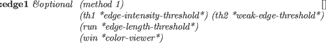

カラー画像は、color-pixel-imageクラスで表現される。
このクラスは、3つのpixel-imageを持っており、RGB表現の
red,green,blueあるいはHLSモデルの色合い,明るさ,濃さをそれぞれ表現する。
RGBとHLS間の変換もサポートしている。
color-pixel-image [クラス]
:super propertied-object
:slots width height component1 component2 component3
-
- 3つのpixel-imageオブジェクトでカラー画像を表現する。
:width [メソッド]
-
- この画像の幅を返す。
:height [メソッド]
-
- この画像の高さを返す。
:size [メソッド]
-
- この画像の幅
 高さを返す。
高さを返す。
:red [メソッド]
-
- component1を返す。
:green [メソッド]
-
- component2を返す。
:blue [メソッド]
-
- component3を返す。
:hue [メソッド]
-
- component1を返す。
色合い(hue)の値(0〜360)は、0〜255の1バイトで表現される。
:lightness [メソッド]
-
- component2を返す。
正規化された明るさ(brightness)の値(0〜1)は、0〜255の整数で表現される。
:saturation [メソッド]
-
- component3返す。
正規化された濃さ(saturation)の値(0〜1)は、0〜255の整数で表現される。
:pixel x y [メソッド]
-
- (x,y)における
component1,component2,component3の値を3つの整数のリストとして返す。
このリストは、RGB値あるいはHLS値のどちらでも解釈できる。
:monochromize &optional (NTSC nil) [メソッド]
-
-
RGB構成から明るさを計算し、新しいpixel-imageを返す。
もし、NTSCがNILなら、(R+G+B)/3が計算される。
もし、Tなら、0.299*R+0.587*G+0.114*Bが計算される。
:HLS [メソッド]
-
- この画像をRGB画像と仮定し、HLS表現に画像を変換する。
それぞれのピクセルを変換するためにRGB2HLSを呼び出す。
:RGB [メソッド]
-
- この画像をHLS画像と仮定し、RGB表現に画像を変換する。
それぞれのピクセルを変換するためにHLS2RGBを呼び出す。
:halve [メソッド]
-
-
この画像を半分のサイズに縮小したcolor-pixel-imageを返す。
:display &optional (win *color-viewer*) [メソッド]
-
-
:putimageを用いてwinで指定されるXwindowに
このカラー画像を表示する。
それぞれのピクセル値はXのカラーマップを参照する。
希望する表現を得るためには、この画像を固有のLUTで
変換すべきである。
:display-lut &optional (newlut1) (newlut2 newlut1) (newlut3 newlut2) [メソッド]
-
-
ルックアップテーブルnewlut1,newlut2,newlut3を
display-lutにそれぞれ設定する。それから、このルックアップテーブルを
使ってこの画像を変換し、xpictureに設定する。

-
- この画像のエッジを抽出する。Xwindow上にこのエッジ画像を表示する。
:hex &optional (x 0) (y 0) (w 16) (h 16) (strm t) [メソッド]
-
-
四角領域で指定されるピクセルデータを16進数フォーマットで表示する。
:hex1 &optional (x 0) (y 0) (w 64) (h 16) (strm t) [メソッド]
-
-
四角領域で指定されるピクセルデータを16進数フォーマットで表示する。
:prin1 strm &rest msg [メソッド]
-
-
この画像を名前と次元と一緒に表示する。
:init width height &optional r g b [メソッド]
-
-
カラー画像のサイズを定義し、pixel-imageにそれぞれカラーの1構成
を割り当てる。
ppmファイルがあったとき、次のプログラムでカラー値を画像に展開し、
Xwindowに表示をすることができる。
(setq ppmimg (read-pnm "xxx.ppm"))
(send ppmimg :hls) ; RGB to HLS conversion
(make-ximage (send ppmimg :hue) *rainbow32*)
2016-03-23